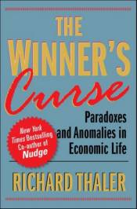

Winner's Curse
|  | |
| archive.org | |
| 2022 | |
Winner of the Nobel Memorial Prize in Economic Sciences
Richard Thaler challenges the received economic wisdom by revealing many of the paradoxes that abound even in the most painstakingly constructed transactions. He presents literate, challenging, and often funny examples of such anomalies as why the winners at auctions are often the real losers—they pay too much and suffer the "winner's curse"—why gamblers bet on long shots at the end of a losing day, why shoppers will save on one appliance only to pass up the identical savings on another, and why sports fans who wouldn't pay more than $200 for a Super Bowl ticket wouldn't sell one they own for less than $400. He also demonstrates that markets do not always operate with the traplike efficiency we impute to them.
Richard H. Thaler received the 2017 Nobel Prize in Economic Sciences. He is the Ralph and Dorothy Keller Distinguished Service Professor of Economics and Behavioral Science at the University of Chicago’s Booth School of Business and director of the University of Chicago’s Center for Decision Research. He is a research associate at the National Bureau of Economic Research where he co-directs their behavioral economics project. He is the New York Times bestselling coauthor of Nudge: Improving Decisions about Health, Wealth and Happiness (with Cass Sunstein) and the author of Quasi Rational Economics . He is also one in a rotating team of economists who writes for the New York Times “Economic View” column.
An economic anomaly occurs when there is a difference between how standard economic theory predicts people should behave and how people actually behave. Thaler examines a number of these situations that occur in the real world and experimentally. Although everyone will recognize these situations, unfortunately much of his discussion will not be accessible to non-economists. Economists will find this an intriguing work that provides excellent reviews of some of the most recent economic research. Consequently this volume would be appropriate for libraries at universities with graduate programs in economics.
-Richard C. Schiming, Mankato State Univ., Minn.
Copyright 1991 Reed Business Information, Inc. --This text refers to an alternate kindle_edition edition.
Richard Thaler challenges the received economic wisdom by revealing many of the paradoxes that abound even in the most painstakingly constructed transactions. He presents literate, challenging, and often funny examples of such anomalies as why the winners at auctions are often the real losers - they pay too much and suffer the "winner's curse" - why gamblers bet on long shots at the end of a losing day, why shoppers will save on one appliance only to pass up the identical savings on another, and why sports fans who wouldn't pay more than $200 for a Super Bowl ticket wouldn't sell one they own for less than $400. He also demonstrates that markets do not always operate with the traplike efficiency we impute to them. Thaler argues that recognizing these sometimes topsy-turvy facts of economic behavior will compel economists, as well as those of us who live by their lights in our jobs and organizations, to adopt a more balanced view of human nature, one reflected in Adam Smith's professed belief that, despite our selfishness, there is something in our nature that prompts us to enjoy, even promote, the happiness of others. --This text refers to an alternate kindle_edition edition.
"Richard H. Thaler, Winner of the 2017 Nobel Prize in Economics"
"By unraveling a series of real-world puzzles with philosophical and practical implications, Thaler illuminates some fairly abstruse ideas in an entertaining way.... The best minds in economics today, as Thaler's provocative book suggests, are trying to supplement [insights into markets and prices] with a broader understanding of what makes people tick." ---Christopher Farrell, Business Week
"Richard Thaler ... stylishly recounts empirical findings that skewer hitherto sheltered economic beliefs." ---Lola L. Lopes, Contemporary Psychology --This text refers to an alternate kindle_edition edition.